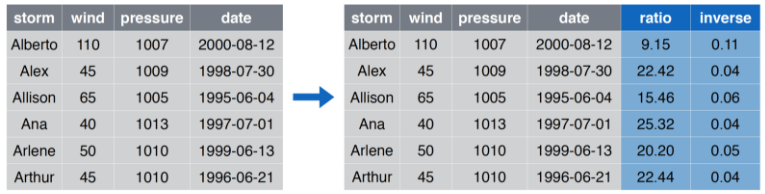
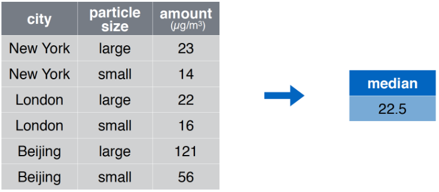
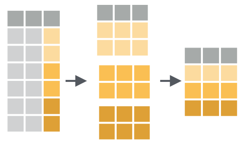

Elementos del Data Science con R
Importación y Manipulación de Datos
Importacion y Manejor de Datos
Importación
Ejemplo
library(tidyverse)
storms <- read_csv("data/storms.csv")
storms## # A tibble: 6 x 4
## storm wind pressure date
## <chr> <int> <int> <date>
## 1 Alberto 110 1007 2000-08-03
## 2 Alex 45 1009 1998-07-27
## 3 Allison 65 1005 1995-06-03
## 4 Ana 40 1013 1997-06-30
## 5 Arlene 50 1010 1999-06-11
## 6 Arthur 45 1010 1996-06-17pollution <- read_csv("data/pollution.csv")
pollution## # A tibble: 6 x 3
## city size amount
## <chr> <chr> <int>
## 1 New York large 23
## 2 New York small 14
## 3 London large 22
## 4 London small 16
## 5 Beijing large 121
## 6 Beijing small 56Manejo de Datos
filter Seleeccionar Filas

filter Ejemplo

filter Código
filter(storms, storm %in% c("Alberto", "Ana"))## # A tibble: 2 x 4
## storm wind pressure date
## <chr> <int> <int> <date>
## 1 Alberto 110 1007 2000-08-03
## 2 Ana 40 1013 1997-06-30storms %>%
filter(storm %in% c("Alberto", "Ana"))## # A tibble: 2 x 4
## storm wind pressure date
## <chr> <int> <int> <date>
## 1 Alberto 110 1007 2000-08-03
## 2 Ana 40 1013 1997-06-30select Seleccionar Columnas

select Ejemplo

select Código
select(storms, storm, pressure)## # A tibble: 6 x 2
## storm pressure
## <chr> <int>
## 1 Alberto 1007
## 2 Alex 1009
## 3 Allison 1005
## 4 Ana 1013
## 5 Arlene 1010
## 6 Arthur 1010storms %>%
select(storm, pressure)## # A tibble: 6 x 2
## storm pressure
## <chr> <int>
## 1 Alberto 1007
## 2 Alex 1009
## 3 Allison 1005
## 4 Ana 1013
## 5 Arlene 1010
## 6 Arthur 1010arrange Ordenar Filas

arrange Ejemplo

arrange Código
arrange(storms, wind)## # A tibble: 6 x 4
## storm wind pressure date
## <chr> <int> <int> <date>
## 1 Ana 40 1013 1997-06-30
## 2 Alex 45 1009 1998-07-27
## 3 Arthur 45 1010 1996-06-17
## 4 Arlene 50 1010 1999-06-11
## 5 Allison 65 1005 1995-06-03
## 6 Alberto 110 1007 2000-08-03storms %>%
arrange(wind)## # A tibble: 6 x 4
## storm wind pressure date
## <chr> <int> <int> <date>
## 1 Ana 40 1013 1997-06-30
## 2 Alex 45 1009 1998-07-27
## 3 Arthur 45 1010 1996-06-17
## 4 Arlene 50 1010 1999-06-11
## 5 Allison 65 1005 1995-06-03
## 6 Alberto 110 1007 2000-08-03mutate Crear/Modificar columnas

mutate Ejemplo

mutate Código
mutate(storms, ratio = pressure/wind, inverse = 1/ratio)## # A tibble: 6 x 6
## storm wind pressure date ratio inverse
## <chr> <int> <int> <date> <dbl> <dbl>
## 1 Alberto 110 1007 2000-08-03 9.15 0.109
## 2 Alex 45 1009 1998-07-27 22.4 0.0446
## 3 Allison 65 1005 1995-06-03 15.5 0.0647
## 4 Ana 40 1013 1997-06-30 25.3 0.0395
## 5 Arlene 50 1010 1999-06-11 20.2 0.0495
## 6 Arthur 45 1010 1996-06-17 22.4 0.0446storms %>%
mutate(ratio = pressure/wind, inverse = 1/ratio)## # A tibble: 6 x 6
## storm wind pressure date ratio inverse
## <chr> <int> <int> <date> <dbl> <dbl>
## 1 Alberto 110 1007 2000-08-03 9.15 0.109
## 2 Alex 45 1009 1998-07-27 22.4 0.0446
## 3 Allison 65 1005 1995-06-03 15.5 0.0647
## 4 Ana 40 1013 1997-06-30 25.3 0.0395
## 5 Arlene 50 1010 1999-06-11 20.2 0.0495
## 6 Arthur 45 1010 1996-06-17 22.4 0.0446summarize Resumir Columnas

summarize Ejemplo

summarise Código
summarise(pollution, median = median(amount))## # A tibble: 1 x 1
## median
## <dbl>
## 1 22.5pollution %>%
summarise(median = median(amount))## # A tibble: 1 x 1
## median
## <dbl>
## 1 22.5group_by + summarize Resumir Columnas por Grupos

group_by + summarize Ejemplo

group_by + summarise Código
pollution %>%
group_by(city) %>%
summarise(
promedio = median(amount),
suma = sum(amount),
n = n()
)## # A tibble: 3 x 4
## city promedio suma n
## <chr> <dbl> <int> <int>
## 1 Beijing 88.5 177 2
## 2 London 19 38 2
## 3 New York 18.5 37 2